건축산업기사 (2013-03-10 기출문제)
1과목: 건축계획
1. 사무소 건축에서 2중지역 배치(double zone layout)에 관한 설명으로 옳지 않은 것은?
- 중규모 크기의 사무소 건물에 적당하다.
- 주계단과 부계단에서 각 실로 들어갈 수 있다.
- 동서로 노출되도록 방향을 정하는 것이 바람직하다.
- 경제성보다 건강, 분위기 등이 더 중요하게 요구되는 건물에 적당하다.
(정답률: 79%)

2. 아파트에서 엘리베이터 대수를 산정하기 위한 가정조건으로 옳지 않은 것은?
- 실제의 주행속도는 전속도의 80%로 가정
- 이용자의 대기시간은 1개층에서 10초로 가정
- 엘리베이터 정원의 80%를 수승으로 가정
- 1인이 승강에 필요한 시간은 운의 개폐 시간을 포함하여 10초로 가정
(정답률: 56%)
3. 주택의 각 실 공간계획에 관한 설명으로 옳지 않은 것은?
- 부엌은 밝고, 관리가 용이한 곳에 위치시킨다.
- 거실은 통로로서 사용되는 평면배치는 피한다.
- 식사실은 가족수 및 식탁배치 등에 따라 크기가 결정된다.
- 부부침실은 주간 생활에 주로 이용되므로 동향 또는 서향으로 하는 것이 바람직하다.
(정답률: 77%)
4. 학교의 음악교실계획에 관한 설명으로 옳지 않은 것은?
- 강당과 연락이 쉬운 위치가 좋다.
- 적당한 잔향시간을 가질 수 있도록 한다.
- 실은 밝게 하는 것이 음악적으로 좋은 분위기가 될 수 있다.
- 옥내운동장이나 공작실과 가까이 배치하여 유기적인 연결을 꾀한다.
(정답률: 70%)
5. 사무소 건축에서 첸터를 비(rentable ratio)의 산정 방법으로 옳은 것은?
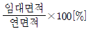
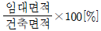
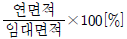
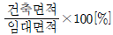
(정답률: 76%)
6. 각종 상점의 방위에 관한 설명으로 옳지 않은 것은?
- 음식점은 도로의 남측이 좋다.
- 식료품점은 강한 석양을 피할 수 있는 방위로 한다.
- 양복점, 가구점, 서점은 가급적 도로의 북측이나 동측을 선택한다.
- 여름용품점은 도로의 북측을 택하여 남측광선의 유입을 유도하는 것이 효과적이다.
(정답률: 61%)
7. 사무소 건축의 코어계획에 관한 설명으로 옳지 않은 것은?
- 엘리베이터홀과 출입구문은 근접하여 배치한다.
- 코어내의 각 공간은 각 층마다 공통의 위치에 배치한다.
- 계단, 엘리베이터 및 화장실은 가능한 근접하여 배치한다.
- 코어내의 서비스 공간과 업무 사무실과의 동선을 단순하게 처리한다.
(정답률: 74%)
8. 1주일간의 평균 수업시간이 40시간인 어느 학교에서 설계제도실이 사용되는 시간은 16시간이다. 그중 4시간은 미술수업을 위해 사용된다면, 설계제도 실의 이용률은?
- 10%
- 25%
- 40%
- 80%
(정답률: 77%)
9. 공장건축의 형식 중 파빌리온 타입에 대한 설명으로 옳지 않은 것은?
- 통풍, 채광이 좋다.
- 공장의 신설, 확장이 비교적 용이하다.
- 건축형식, 구조를 각기 다르게 할 수 없다.
- 각 동의 건설을 병행할 수 있응므로 조기완성이 가능하다.
(정답률: 78%)
10. 상점건축의 동선계획에서 동선을 길고 원활하게 처리하여 효율이 좋은 것은?
- 관리 동선
- 고객 동선
- 판매원 동선
- 상품 반ㆍ출입 동선
(정답률: 79%)
11. 주거단지의 단위를 작은 것부터 큰 순서로 올바르게 나열한 것은?
- 인보구＜근린주구＜근린분구
- 인보구＜근린분구＜근린주구
- 근린분구＜인보구＜근린주구
- 근린분구＜근린주구＜인보구
(정답률: 87%)
12. 다음 중 사무소 건축에서 기준층 층고의 결정 요소와 가장 거리가 먼 것은?
- 채광률
- 사용목적
- 엘리베이터의 대수
- 공기조화(Air Conditioning)
(정답률: 87%)
13. 다음 설명에 알맞은 단지내 도로 형식은?
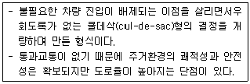
- 격자형
- 방사형
- T자형
- Loop형
(정답률: 77%)
14. 부엌 작업대의 배치 유형 중 L자형에 관한 설명으로 옳지 않은 것은?
- 정방형 부엌에 적합한 유형이다.
- 두 벽면을 이용하여 작업대를 배치한 형태이다.
- 작업대의 코너부분에 개수대 또는 레인지 설치가 용이하다.
- 모서리 부분의 활용도가 낮은 관계로 이에 대한 대책이 요구된다.
(정답률: 78%)
15. 다음 설명에 알맞은 연립주택의 유형은?
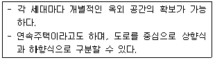
- 타운 하우스
- 로우 하우스
- 중정형 주택
- 테라스 하우스
(정답률: 80%)
16. 백화점 건축계획에 관한 설명으로 옳지 않은 것은?
- 일조권 확보 계획, 인동간격과 방위와 관련된 배치계획이 우선적으로 요구된다.
- 정면성을 강조함으로서 다양한 고객의 동선을 용이하게 유도하는 것이 요구된다.
- 전면에 광장과 같은 이벤트 행사 등을 할 수 있는 개방적 외부공간을 계획하는 것이 좋다.
- 2면 도로의 경우 주도로측에 보행자 출입구, 부도로측에는 차량 및 종업원 출입구를 계획한다.
(정답률: 76%)
17. 학교건축에서 교사의 배치 방법 중 분산병렬형에 관한 설명으로 옳지 않은 것은?
- 일종의 핑거 플랜(finger plan)이다.
- 일조, 통풍 등 교실의 환경 조건이 균등하다.
- 구조계획이 간단하며, 규격형의 이용이 편리하다.
- 대지의 효율적 이용이 가능하므로 소규모 대지에 적용이 용이하다.
(정답률: 77%)
18. 공장건축의 지붕형태에 관한 설명으로 옳지 않은 것은?
- 솟을 지붕: 채광ㆍ환기에 적합한 방법이다.
- 샤런 지붕: 기둥이 많이 소요되는 단점이 있다.
- 뾰족 지붕: 직사광선을 어느 정도 허용하는 결정이 있다.
- 톱날 지붕: 채광창을 북향으로 하면 하루 종일 변함없는 조도를 유지할 수 있다.
(정답률: 76%)
19. 다음의 아파트 평면형식 중 각 세대의 프라이버시 확보가 가장 용이한 것은?
- 집중형
- 계단실형
- 편복도형
- 중복도형
(정답률: 89%)
20. 상점건축에서 진열창( show window)의 눈부심을 방지하는 방법으로 옳지 않은 것은?
- 곡면 유리를 사용한다.
- 유리면을 경사지게 한다.
- 진열창의 내부를 외부보다 어둡게 한다.
- 차양을 설치하여 진열창 외부에 그늘을 조성한다.
(정답률: 88%)
2과목: 건축시공
21. 접착제 중 가장 우수한 것으로 경화제의 첨가에 따라 불용불융(不溶不駥)인 수지가 되며 특히 금속접착에 적당하며 항공기재의 접착에도 쓰이는 것은?
- 에폭시수지
- 페놀수지
- 엘라인수지
- 요소수지
(정답률: 76%)
22. 콘크리트를 부어 넣은 후 수분의 증발에 따라 그 표면에 나타나는 백색의 미세한 물질은?
- 블리딩(Bleeding)
- 레이턴스(Laitance)
- 팽창점토
- 슬러리(slurry)
(정답률: 69%)
23. 공개경쟁입찰의 장점으로 옳지 않은 것은?
- 균등한 입찰참가의 기회부여
- 공사의 시공정밀도 확보
- 공정하고 자유로운 경쟁
- 저렴한 공사비
(정답률: 75%)
24. 콘크리트 배합설계에서의 요구사항으로 옳지 않은 것은?
- 소요의 강도를 얻을 수 있을 것.
- 시공에 적당한 워커빌리티를 가질 것.
- 시공상 재료분리를 일으키지 않고 균질성을 유지할 것.
- 시멘트 양을 최대로 늘려 가능한 한 높은 강도를 확보할 것.
(정답률: 84%)
25. 네트워크(Net work)공정표의 특징으로 옳지 않은 것은?
- 각 작업의 상호 관계가 명확하게 표시된다.
- 공사전체 흐름의 파악이 용이하다.
- 공사의 진척상황이 누구에게나 알려지게 되나 시간의 경과가 명확하지 못하다.
- 계획 단계에서 공정상의 문제점이 명확히 파악 되어 작업전에 수정이 가능하다.
(정답률: 79%)
26. 목재의 접합방법과 가장 거리가 먼 것은?
- 맞춤
- 이음
- 압일
- 쪽매
(정답률: 84%)
27. 석공사 건식공법에 대한 설명으로 옳지 않은 것 은?
- 고층건물에 유리하다.
- 얇은 부재의 시공이 용이하다.
- 시공속도가 빠르고 노동비가 절감된다.
- 동결, 벽화 및 결로현상이 없다.
(정답률: 46%)
28. 벽면적 100m2가 되는 1층 창고를 건축할 때 고요 블록 매수로 옳은 것은? (단, 블록은 기본형임)
- 1,250매
- 1,300매
- 1,350매
- 1,400매
(정답률: 66%)
29. 도장공사 시 건조제를 많이 넣었을 때 나타나는 현상으로 옳은 것은?
- 도막에 균열이 생긴다.
- 광택이 생긴다.
- 내구력이 중대한다.
- 접착력이 증가한다.
(정답률: 85%)
30. 지반의 지내력을 알기 위한 시험이 아닌 것은?
- 평판재하시험
- 말뚝재하시험
- 말뚝박기시험
- 3축압축시험
(정답률: 78%)
31. 최근 학교, 군 시설 등에서 활용되는 인간투자산업의 계약방식으로 인간사업자가 자금조달 및 시설을 준공하여 소유권을 정부나 발주처에 이전하되, 정부나 발주처로부터 임대료를 지불받아 투자비를 회수할 수 있도록 한 것은?
- BOT(Build-Operate-Transfer)
- BTO(Build-Transfer-Operate)
- BTL(Build-Transfer-Lease)
- BLT(Build-Lease-Transfer)
(정답률: 57%)
32. 벽들의 품질을 결정하는데 가장 중요한 사항은?
- 전단강도, 인장강도
- 흡수율, 전단강도
- 인장강도, 휨강도
- 흡수율, 압축강도
(정답률: 58%)
33. 다음 공법 중 지하연속벽 공법이 아닌 것은?
- 슬러리월(Slurry Wall) 공법
- CIP(Cast in Place pile) 공법
- PIP(Packed in Place pile) 공법
- 어스앵커(Earth Anchor) 공법
(정답률: 73%)
34. 다음 재료의 수량산출 시 할중율로 옳은 것은?
- 이형철근: 3%
- 원형철근: 7%
- 대형형강: 5%
- 강판: 5%
(정답률: 72%)
35. 연약한 점성토 지반에 주상의 투수층인 모래말뚝을 다수 설치하여 그 토층 속의 수분을 배수하여 지반의 암밀강화를 도모하는 공법은?
- 샌드 드레인 공법
- 웰 포인트 공법
- 바이브로 컴포서 공법
- 시멘트 주입 공법
(정답률: 81%)
36. 기둥, 벽 등의 모서리에 대어 미장바름을 보호하는 철물은?
- 논 슬립(Non slip)
- 리브 라스(Lib lath)
- 메탈 라스(Metal lath)
- 코너 비드(Corner bead)
(정답률: 89%)
37. 건축물 커튼월의 연결부 줄눈에서 수밀성능, 기밀성능 차응성능을 확보하기 위하여 사용하는 재료는?
- 실리콘 실러
- 실링재
- 벤토나이트 시트
- 발수제
(정답률: 64%)
38. 목구조에 사용하는 부재에 관한 설명 중 옳지 않은 것은?
- 압축력을 부담하는 가새의 단면적은 기둥 단면적의 1/5 이상으로 한다.
- 버팀대의 경사는 45°로 하는 것이 좋다.
- 귀잡이의 맞춤은 짧은 장부빗턱맞춤, 볼트조임 등으로 한다.
- 가새, 버팀대, 귀잡이 등은 횡력에 대한 변형을 방지한다.
(정답률: 60%)
39. 재료를 섞고 올드를 찍은 후 한번 구워 비스킷(biscuit)을 만든 후 유약을 바르고 다시 한번 구워낸 타일을 의하는 것은?
- 내자타일
- 시유타일
- 우유타일
- 표면처리타일
(정답률: 77%)
40. 콘크리트의 동해방지대책으로 옳지 않은 것은?
- AE제를 사용하여 적정량의 공기를 연행시킨다.
- 아연도금 철근을 사용한다.
- 물시멘트비를 낮게 한다.
- 흡수량이 적은 골재를 사용한다.
(정답률: 60%)
3과목: 건축구조
41. 그림과 같은 단순보에서 중앙부의 최대처짐은? (단, 보의 단면은 20cm×30cm, 탄성계수 E=8×103μPa)
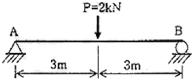
- 1.5mm
- 2.0mm
- 2.5mm
- 5.0mm
(정답률: 52%)
42. 철근콘크리트구조의 압축부재 설계의 제한사항에서 사각형 압축부재 축방향 주철근의 최소 개수는?
- 2개
- 3개
- 4개
- 5개
(정답률: 59%)
43. 그림과 같은 부정정보에서 A정으로부터 전단력이 0이 되는 지정 x 값은?
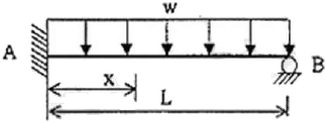
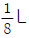
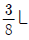
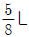
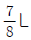
(정답률: 50%)
44. 그림과 같은 기둥의 단면(斷面)이 150×150 mm일 경우 이 기둥의 오일러(Euler) 좌굴하중은? (단, 탄성계수 E = 8 × 103Mpa)
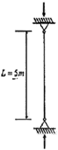
- 133.2kN
- 154.6kN
- 176.9kN
- 198.7kN
(정답률: 36%)
45. 브의 폭 b=300mm, 응력블록의 깊이 a=100mm인 철근콘크리트 단근 직사각형 보에서 콘크리트의 전압축력은? (단, fck=24Mpa이다.)
- 288kN
- 472kN
- 612kN
- 720kN
(정답률: 53%)
46. 강도설계법에 의한 다음 그림과 같은 철근콘크리트의 보설계에서 콘크리트에 의한 전단강도 Vc는 약 얼마인가? (단, KBC2009기준, fck =24MPa, fυ =400MPa, 인장철근 및 압축철근은 D22, 스터럼은 D10을 사용한다.
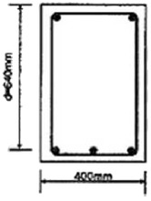
- 150kN
- 180kN
- 210kN
- 245kN
(정답률: 57%)
47. 압축을 받는 이형철근의 최소 정착길이는? (단, KBC2009 기준, 콘크리트강도 fck =25MPa 철근직경 25mm, 철근강도 fy=400MPa )
- 300mm
- 400mm
- 500mm
- 520mm
(정답률: 35%)
48. 목구조에 관한 설명 중 옳지 않은 것은?
- 층도리는 2층 마루바닥이 있는 부분에 수평으로 대는 기로재이다.
- 인방은 기둥과 기둥에 가로대어 창문들을 끼워대는 뼈대가 되는 것이다.
- 가새는 목조 벽체를 수평력에 견디게 하는 것이다.
- 듀벨은 볼트와 같이 사용하기도 하며 듀벨은 장력(張力), 볼트는 전단력(剪斷力)에 작용한다.
(정답률: 53%)
49. 다음 그림과 같은 철근콘크리트 직사각형 보에서의 강도감소계수(ø)를 구하면? (단, fck =24MPa, fυ =400MPa, Ax=1,500mm2)
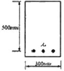
- 0.70
- 0.80
- 0.85
- 0.95
(정답률: 53%)
50. 스팬이 10m인 양단 단순지지 철근콘크리트보에서 처짐을 계산하지 않는 경우의 보의 최소 두께는?
- 575mm
- 600mm
- 625mm
- 650mm
(정답률: 44%)
51. 그림과 같은 단면을 가지는 직사각형보의 철근비는? (단, 철근 3-D16=597mm2, d = 400mm)
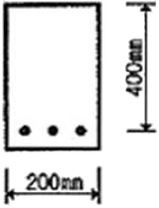
- 0.0065
- 0.0070
- 0.0075
- 0.0080
(정답률: 57%)
52. 사질 및 점토층에 관한 설명 중 옳지 않은 것은?
- 내부마찰각은 점토층보다 사질층이 크다.
- 점토층은 사질층보다 침하에 시간을 요한다.
- 암밀침하량은 점토층보다 사질층이 크다.
- 사질층은 입도 및 밀도에 따라서 지진 시 유동화 현상을 일으킨다.
(정답률: 45%)
53. 그림과 같은 원형단면의 x측에 대한 단면2차 모멘트 값은?
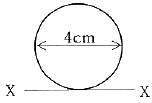
- 20πcm4
- 30πcm4
- 40πcm4
- 50πcm4
(정답률: 45%)
54. 그림과 같이 삼각형구조가 평형상태에 있을 때 법선방향에 대한 힘의 크기 P는 약 얼마인가?
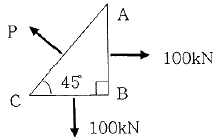
- 100kN
- 121kN
- 131kN
- 141kN
(정답률: 43%)
55. 그림과 같은 단순보 중앙에 120kN의 집중하중이 작용할 때 최대 전단응력도는?
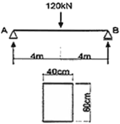
- 0.275MPa
- 0.325MPa
- 0.375MPa
- 0.425MPa
(정답률: 58%)
56. 그림과 같은 힘 P가 작용하는 라멘에서 휨모멘트가 0 이 되는 곳은 몇 개인가?
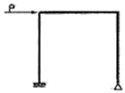
- 2
- 3
- 4
- 5
(정답률: 52%)
57. 그림과 같은 구조물의 부정정차수는?
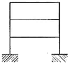
- 6차 부정정
- 7차 부정정
- 8차 부정정
- 9차 부정정
(정답률: 63%)
58. 담면계수 및 단면2차반지름에 관한 설명 중 옳지 않은 것은?
- 단면계수는 도심축에 대한 단면2차모멘트를 단면적으로 나눈 값은 제곱근이다.
- 단면계수가 큰 단면이 휨에 대해크게 저항한다.
- 단면계수가 단위는 cm3, m3이며 부호는 항상 (+)이다.
- 단면2차반지름은 좌굴에 대한 저항값을 나타낸다.
(정답률: 46%)
59. 다음과 같이 사람이 다리를 건너 가려고 할 때, 얼마의 거리(x)를 지나면 다리가 휨에 대한 항복을 시작하는가? (단, 재료는 단면 b × h = 300mm×100mm, 허용 휨응력도 fb = 6MPa, 사람 몸무게 700N)
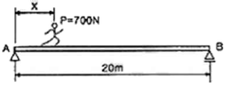
- 5.22m
- 6.22m
- 7.22m
- 8.22m
(정답률: 54%)
60. 철근콘크리트 T형보의 유효폭 산정에서 관계가 없는 항목은?
- 보의 높이
- 슬래브의 두께
- 양측 슬래브의 중심간 거리
- 보의 폭
(정답률: 62%)
4과목: 건축설비
61. 대변기의 세정방식 중 바닥으로부터 1.6m 이상 높은 위치에 탱크를 설치하고, 물 탭을 통하여 공급된 일정량의 물을 의한 저장하고 있다가 핸들 또는 레버의 조작에 의해 낙차에 의한 수압으로 대변기를 세척하는 방식은?
- 로 탱크식
- 하이 탱크식
- 플러시 밸브식
- 사이폰 제트식
(정답률: 72%)
62. 다음 그림과 같이 관경이 20mm에서 10mm로 축소되는 원형관에서 유속 v의 값은?
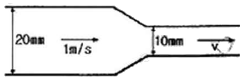
- 1m/s
- 2m/s
- 3m/s
- 4m/s
(정답률: 43%)
63. 배수트랩의 봉수 파괴 원인에 해당하지 않는 것은?
- 증발작용
- 서어징 현상
- 모세관 현상
- 유도사이폰 작용
(정답률: 70%)
64. 습공기선도에 나타나는 사항이 아닌 것은?
- 노점온도
- 습구온도
- 절대습도
- 열관류율
(정답률: 71%)
65. 다음 중 조명 설계시 가장 먼저 이루어져야 하는 것은?
- 광원의 선정
- 조명 기구의 선정
- 기구 대수의 산출
- 소요 조도의 결정
(정답률: 66%)
66. 거치용 축전지 중 연축전지에 관한 설명으로 옳지 않은 것은?
- 공칭전압은 2[V/셀]이다.
- 충방전 전압의 차이가 크다.
- 축전지의 필요 셀수가 적어도 된다.
- 전해액의 비중에 의해 충방전상태를 추정할 수 있다.
(정답률: 38%)
67. 송풍온도를 일정하게 하고 송풍량을 변경해 부하변동에 대응하는 공기조화방식은?
- 이중 덕트 방식
- 멀티존 유닛 방식
- 단일덕트 정풍량 방식
- 단일덕트 변풍량 방식
(정답률: 78%)
68. 3상 평형부하에 220[V]의 전압을 가하니 10[A]의 전류가 흘렸다. 역률이 0.75 일 때 소비되는 전력은?
- 약 953[W]
- 약 2858[W]
- 약 4950[W]
- 약 5081[W]
(정답률: 67%)
69. 중앙난방방식을 직접난방과 간접난방으로 구분할 경우, 다음 중 직접난방에 해당하지 않는 것은?
- 온수난방
- 증기난방
- 온풍난방
- 복사난방
(정답률: 54%)
70. 급탕설비의 안전장치 중 보일러, 저탕조 등 밀폐가열장치 내의 압력상승을 도피시키기 위해 사용하는 것은?
- 팽창관
- 용해전
- 신축이음
- 온도조절밸브
(정답률: 85%)
71. 공기조화방식 중 전공기 방식에 관한 설명으로 옳지 않은 것은?
- 중간기에 외기냉방이 가능하다.
- 실내에 배관으로 인한 누수의 염려가 없다.
- 덕트 스페이스가 필요 없으며 공조실의 면적이 작다.
- 팬코일 유닛과 같은 기구의 노출이 없어 실내 유효면적을 넓힐 수 있다.
(정답률: 73%)
72. 지역난방에 관한 설명으로 옳지 않은 것은?
- 초기투자비는 싸지만 사용요금의 분배가 곤란하다.
- 설비의 고도화에 따라 도시의 매연을 경감시킬 수 있다.
- 각 건물의 설비면적을 줄이고 유효면적을 넓힐 수 있다.
- 각 건물마다 보일러 시설을 할 필요가 없으나 배관중의 열손실이 많다.
(정답률: 70%)
73. 소방시설은 소화설비, 경보설비, 피난설비, 소화용수설비, 소화활동설비로 구분할 수 있다. 다음 중 소화설비에 해당하지 않는 것은?
- 제연설비
- 포소화설비
- 옥내소화전설비
- 스프링클러설비
(정답률: 68%)
74. 실내 냉방부하 중에서 현열량이 3000W, 잠열량이 500W 일 때 현열비는?
- 0.74
- 0.68
- 0.86
- 0.92
(정답률: 65%)
75. 옥외소화전의 설치개수가 3개인 건축물에서 옥외 소화전 설비의 수원의 저수량은 최소 얼마 이상이 되도록 하여야 하는가?
- 5.2m3
- 7.8m3
- 14m3
- 21m3
(정답률: 43%)
76. 직접조명방식에 관한 설명으로 옳지 않은 것은?
- 휘도의 차가 크다.
- 작업면에 고조도를 얻을 수 있다.
- 발산광속 중 90~100% 정도가 작업면을 직접 조명한다.
- 일반적으로 천장이나 벽면이 광원으로서의 역할을 한다.
(정답률: 67%)
77. 펌프로 옥상탱크에 24m3/h의 물을 양수하고자 할때 펌프에 필요한 축동력은? (단, 펌프의 흡입양정은 2m, 토출양정은 29m, 펌프의 효율은 55%, 배관의 전마찰손실은 펌프실양 정의 35%로 가정한다.
- 약 1.4kW
- 약 5.0kW
- 약 9.4kW
- 약 12.5kW
(정답률: 48%)
78. 다음과 같은 조건에서 연면적이 2000m2인 사무소 건물에 필요한 1일당 급수량은?
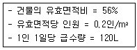
- 3.36m3/d
- 4.36m3/d
- 26.88m3/d
- 40.68m3/d
(정답률: 73%)
79. 옥내의 은폐장소로서 건조한 콘크리트 바닥면에 매일 사용되는 것으로, 사무용 건물 등에 채용되는 배선방법은?
- 버스덕트 배선
- 금속몰드 배선
- 금속덕트 배선
- 플로어덕트 배선
(정답률: 69%)
80. 다음 중 급수배관 내에서 수경작용(water hammering)이 발생되는 가장 주된 원인은?
- 관경의 축소
- 관경의 확대
- 배관내의 온도변화
- 배관내의 압력변화
(정답률: 75%)
5과목: 건축관계법규
81. 다음 중 건축법령상 숙박시설에 해당하지 않는 것은?
- 여관
- 가족호텔
- 유스호스텔
- 휴양콘도미니얼
(정답률: 74%)
82. 다음 중 녹지지역의 세분에 해당하지 않는 것은?
- 일반녹지지역
- 보전녹지지역
- 생산녹지지역
- 자연녹지지역
(정답률: 52%)
83. 주요구조부를 내화구조로 하여야 하는 대상 건축물에 속하지 않는 것은?
- 종교시설의 용도로 쓰는 건축물로서 집회실의 바닥면적의 합계가 300m2인 건축물
- 판매시설의 용도로 쓰는 건축물로서 그 용도로 쓰는 바닥면적의 합계가 300m2인 건축물
- 관광휴계시설의 용도로 쓰는 건축물로서 그 용도로 쓰는 바닥면적의 합계가 500m2인 건축물
- 문화 및 집회시설 중 전시장의 용도로 쓰는 건축 물로서 그 용도로 쓰는 바닥면적의 합계가 500m2인 건축물
(정답률: 59%)
84. 용도지역에 따른 건폐율의 최대한도가 옳지 않은 것은?
- 주거지역: 70% 이하
- 상업지역: 90% 이하
- 공업지역: 80% 이하
- 녹지지역: 20% 이하
(정답률: 65%)
85. 건축물의 출입구에 설치하는 회전문에 관한 기준 내용으로 옳지 않은 것은?
- 계단이나 에스컬레이터로부터 2m 이상의 거리를 둘 것.
- 출입에 지장이 없도록 일정한 방향으로 회전하는 구조로 할 것.
- 회전문의 회전속도는 분당회전수가 10회를 넘지 아니하도록 할 것.
- 자동회전문은 충격이 가하여지거나 사용자가 위험한 위치에 있는 경우에는 전자감지장치 등을 사용하여 정지하는 구조로 할 것.
(정답률: 82%)
86. 지하식 또는 건축물식 노외주차장의 차로에 관한 기준 내용으로 옳지 않은 것은?
- 높이는 주차바닥면으로부터 2.3m 이상으로 하여야 한다.
- 경사로의 종단경사도는 직선 부분에서는 17%를 초과하여서는 아니된다.
- 주차대수 규모가 50대 이상인 경우의 경사로는 너비 6m 이상인 2차로를 확보하거나 진입차로와 진출차로를 분리하여야 한다.
- 경사로의 차로가 1차로 일 때, 차로의 너비는 직선형인 경우 3m 이상으로 하고 곡선형인 경우에는 3.3 m 이상으로 하여야 한다.
(정답률: 46%)
87. 문화 및 집회시설 중 공연장의 개별관람석에 설치하는 각 출구의 유효너비는 최소 얼마 이상이어야 하는가? (단, 바닥면적이 300m2 이상인 경우)
- 1.2m
- 1.5m
- 1.8m
- 2.1m
(정답률: 47%)
88. 시설물의 부지 인근에 단독 또는 공동으로 부설주차장을 설치할 경우, 해당 부지의 경계선으로부터 부설주차장까지의 직선거리는 최대 얼마 이내이어야 하는가?
- 50m
- 100m
- 200m
- 300m
(정답률: 62%)
89. 다음의 주차장의 주차단위구획에 관한 기준 내용중 빈칸에 알맞은 것은? (단, 평행주차형식의 경우)
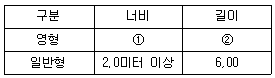
- ① 1.8미터 이상, ②4.0 미터 이상
- ① 1.8미터 이상, ②5.0 미터 이상
- ① 1.7미터 이상, ②5.0 미터 이상
- ① 1.7미터 이상, ②4.5 미터 이상
(정답률: 43%)
90. 도시ㆍ군계획 수립 대상지역의 일부에 대하여 토지이용을 합리화하고 그 기능을 증진시키며 미관을 개선하고 양호한 환경을 확보하며, 그 지역을 체계적ㆍ계획적으로 관리하기 위하여 수립하는 것은?
- 광역도시계획
- 지구단위계획
- 도시ㆍ군이용계획
- 도시ㆍ군기본계획
(정답률: 75%)
91. 용적률을 산정할 때에 사용되는 연면적에 포함되는 것은?
- 지하층의 면적
- 초고층건축물에 설치하는 피난안전구역의 면적
- 준초고층건축물에 설치하는 피난안전구역의 면적
- 지상층의 주차용(해당 건축물의 부속용도가 아닌경우)으로 쓰는 면적
(정답률: 61%)
92. 종교시설의 집회실로서 그 바닥면적이 200m2인 경우, 반자의 높이는 최소 얼마 이상이어야 하는가? (단, 기계횐기장치를 설치하지 않은 경우)
- 2.1m
- 3.0m
- 4.0m
- 4.5m
(정답률: 67%)
93. 다음 중 중측에 해당하지 않는 것은?
- 기존 건축물이 있는 대지에서 건축물의 높이를 늘리는 것
- 기존 건축물이 있는 대지에서 건축물의 연면적을 늘리는 것
- 기존 건축물이 있는 대지에서 건축물의 건축면적을 늘리는 것
- 기존 건출물이 있는 대지에서 건축물의 개구부 숫자를 늘리는 것
(정답률: 80%)
94. 건축물의 연면적 중 주차장으로 사용되는 부분의 비율이 최소 얼마 이상인 경우 주차전용건축물로 볼 수 있는가? (단, 주차장 외의 용도로 사용되는 부분이 업무시설인 경우)
- 40%
- 55%
- 70%
- 95%
(정답률: 65%)
95. 건축법령상 용어의 정의로 옳지 않은 것은?
- 건축이란 건축물을 신축ㆍ중축ㆍ개축ㆍ재축하거나 건축물을 대수선하는 것을 말한다.
- 리모델링이란 건축물의 노후화를 억제하거나 기능 향상 등을 위하여 대수선하거나 일부 중축하는 행위를 말한다.
- 거실이란 건축물 안에서 거주, 집무, 작업, 집회, 오락, 그 밖에 이와 유사한 목적을 위하여 사용되는 방을 말한다.
- 지하층이란 건축물의 바닥이 지표면 아래에 있는 층으로서 바닥에서 지표면까지 평균높이가 해당 층 높이의 2분의 1 이상인 것을 말한다.
(정답률: 62%)
96. 건축물의 소유자 또는 관리자는 건축물이 재해로 멸실된 경우 멸실 후 최대 얼마 이내에 신고하여야 하는가?
- 10일
- 30일
- 50일
- 100일
(정답률: 82%)
97. 건축법령상 다가구주택이 갖추어야 할 요건에 해당하지 않는 것은?
- 독립된 주거의 형태가 아닐 것.
- 19세대 이하가 거주할 수 있을 것.
- 주택으로 쓰는 층수(지하층은 제외)가 3개 층 이하일 것.
- 1개 통의 주택으로 쓰는 바닥면적(부설 주차장 면적은 제의)의 합계가 660m2 이하일 것.
(정답률: 67%)
98. 대지면적이 500m2인 건축물의 옥상에 관련 기준에 따라 조경을 한 경우 옥상 조경면적 중 대지의 조경 면적으로 산정되는 면적은? (단, 조경설치기준은 대지면적의 10%이며 옥상 조경면적은 30m2이다.)
- 10m2
- 15m2
- 20m2
- 25m2
(정답률: 49%)
99. 6층 이상의 거실면적의 합계가 4000m2인 경우, 설치하여야 하는 승용승강기의 최소 대수가 가장 많은 건축물의 용도는? (단, 8인승 승강기의 경우)
- 업무시설
- 숙박시설
- 문화 및 집회시설 중 전시장
- 문화 및 집회시설 중 공연장
(정답률: 63%)
100. 공동주택과 오피스텔의 난방설비를 개별난방방식으로 하는 경우, 보일러실의 윗부분에는 면적이 최소 얼마 이상인 환기창을 설치하여야 하는가? (단, 전기보일러가 아닌 경우)
- 0.5m2
- 0.7m2
- 1m2
- 1.2m2
(정답률: 59%)